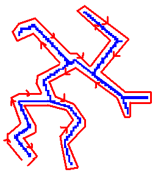
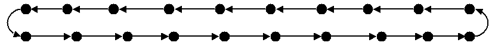
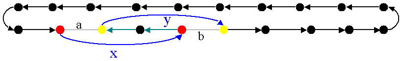
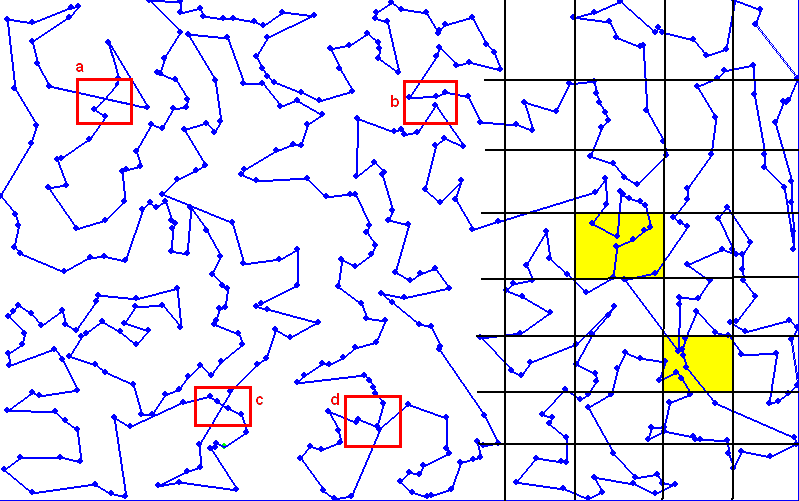
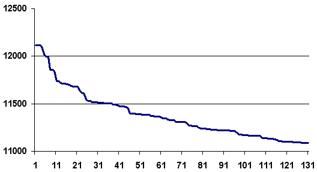
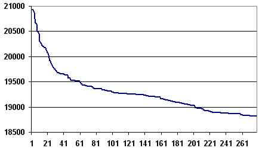

Circuit hamiltonien et Kruskal#
Le module tsp_kruskal implémente l’algorithme
ci-dessus. On peut lire également
Solution of a Large-Scale Traveling-Salesman Problem.
Arbre de poids minimal et circuit hamiltonien#
Ce paragraphe décrit un algorithme permettant de construire un chemin dont on espère qu’il sera le plus court. Il part d’un ensemble de villes pour construire un circuit hamiltonien. Cet algorithme utilise deux chemins d’un type particulier, eulérien et hamiltonien.
Un chemin eulérien d’un graphe est un chemin passant par tous les arcs de ce graphe. Un circuit eulérien est un chemin eulérien dont les noe uds de départ et d’arrivée sont identiques.
Un chemin hamiltonien d’un graphe est un chemin passant par tous les noe uds de ce graphe. Un circuit hamiltonien est un chemin hamiltonien dont les noe uds de départ et d’arrivée sont identiques.
La première étape de l’algorithme consiste à construire un arbre de poids minimum.
Si le chemin doit parcourir n villes, cette première étape permet de
réduire l’ensemble des arcs possibles  à un multiple de n.
à un multiple de n.
On suppose qu’il faut déterminer le plus court chemin passant par n villes. L’algorithme se décompose en quatre étapes :
construction de l’arbre de poids minimum
construction d’un circuit eulérien
construction d’un circuit hamiltonien
simplification du circuit hamiltonien
Le circuit eulérien parcourt tous les arcs de poids minimal et passe donc plusieurs fois par le même sommet. En enlevant les sommets redondants, on obtient un circuit hamiltonien qui est une solution pour le problème du voyageur de commerce. L’avantage de cet algorithme est son coût, multiple du nombre de villes.
Arbre de poids minimum#
Obtenir l’arbre de poids minimum est encore un problème d’optimisation avec contrainte. Il s’agit de réduire l’ensemble des arcs tout en conservant un graphe composé d’une seule composante connexe.
Une composante connexe C d’un graphe est un ensemble de noeuds tel que pour tout couple de noeuds , il existe un chemin allant de s à t dont tous les noe uds intermédiaires sont inclus dans C.
Il est maintenant possible d’exprimer la contrainte liée au problème de l’arbre de poids minimum.
Soit un graphe G=(X,E), un arbre de poids minimum est un sous-arbre de G qui vérifie :
, le graphe de poids minimum partage les mêmes sommets que le graphe initial.
, les arcs graphe de poids minimum possède forme un sous-ensemble de l’ensemble des arcs du graphe initial.
La somme des poids des arcs de est minimale.
Le graphe contient autant de composantes connexes que le graphe initial.
L’algorithme qui suit n’est pas le seul permettant d’obtenir une solution approchée à ce problème d’optimisation. Il ne considère que le cas où le graphe ne contient qu’une seule composante connexe. Il consiste à partir d’un graphe débarrassé de tous ses arcs puis à ajouter des arcs reliant deux composantes connexes différentes jusqu’à ce qu’il n’en reste plus qu’une.
Algorithme A1 : Kruskal
On suppose que G(X,E) est un graphe, X est l’ensemble des sommets, E est l’ensemble des arcs. Si , f(e) désigne son poids. Cet algorithme a pour but d’obtenir un sous-ensemble de poids minimal tel que le graphe G(X,F) ne forme qu’une seule composante connexe. Le nombre de sommets est N. L’arc e relie les sommets .
initialisation
On trie les arcs par ordre croissant de poids, on obtient la suite . A chaque sommet x, on associe la composante connexe c(x). , n désigne le nombre de composantes connexes. .
itération
Cet algorithme ne retourne pas la solution optimale mais une solution
approchée. Son coût est proportionnel au cardinal de l’ensemble E.
A priori, pour le problème du voyageur de commerce, si le graphe
contient n villes, le nombre d’arcs possibles est .
Dans cet ensemble, la majeure partie des arcs ne sera pas utilisée pour
le meilleur chemin puisque les arcs entre plus proches voisins leur seront
préférés. Afin de réduire cet ensemble, il est possible de quadriller
le plan en zones et d’associer à chaque ville la zone à laquelle
il appartient. On peut ainsi se contenter de construire l’arbre de poids
minimal à l’aide des arcs entre villes de même zone ou de zones voisines.
30000 villes sont réparties dans ce carré. Evaluer chaque arc est alors beaucoup trop coûteux.
Une solution simple consiste à diviser le plan en zone puis à ne considérer les arcs
entre deux sommets de la même zone ou de deux zones voisines. L’ensemble des arcs
pris en compte dans l’algorithme de Kruskal (ref{algo_kruskal_tsp}) n’est
plus mais un multiple de n d’autant plus grand que les zones
sont grandes. On peut par exemple déterminer le nombre de zones z
en essayant de faire en sorte
qu’elles contiennent un nombre constant  de villes.
Le nombre d’arcs envisagés est majoré par : .
de villes.
Le nombre d’arcs envisagés est majoré par : .
Exemples d’arbres obtenus par l’algorithme de Kruskal. Le premier pour une centaine de villes, le second pour environ 3000 villes.
Circuit eulérien#
Le graphe obtenu par l’algorithme est dans notre cas non orienté. Il est possible de passer d’une ville à une autre puis d’en revenir. Ceci signifie donc que chaque sommet est connecté à un nombre pair d’arcs. Par conséquent, il est possible de construire un chemin qui passe une seule fois par tous les arcs du graphe.
La définition d’un circuit eulérien ne fait pas intervenir de considérations géométriques. Toutefois, pour déterminer un circuit eulérien, nous allons utiliser les coordonnées des villes qui composent les sommets du graphe afin de parcourir cet arbre selon le sens trigonométrique inverse.
Parcours de l’arbre de poids minimal de façon à former un circuit eulérien. On part d’une extrémité puis on parcourt le graphe dans le sens trigonométrique inverse jusqu’à revenir au point de départ.
Algorithme A2 : Circuit Eulérien
On suppose que le graphe dont il faut obtenir un circuit eulérien est un arbre non-orienté de poids minimal comme celui retourné par l’algorithme. On suppose également qu’à chaque sommet x sont associés des coordonnées p(x) et que deux sommets ne sont jamais confondus. L’arbre contient n sommets et 2n arcs.
initialisation
On choisit un noeud x connecté à un seul autre sommet.
 et .
Pour chaque arc e,
et .
Pour chaque arc e,
(P): si l’arc a été parcouru
itération
Notation : x désigne le dernier sommet visité,
désigne le sommet précédent dans le chemin ch.
Tant que  , on choisit le sommet suivant de telle sorte que :
, on choisit le sommet suivant de telle sorte que :
L’arc existe et vérifie .
Parmi tous les arcs vérifiant la première condition, on choisit celui qui maximise l’angle .
Puis on met à jour les variables :
ch est le chemin eulérien cherché.
Le coût de cet algorithme est en O(n).
Circuit hamiltonien#
A partir d’un circuit eulérien, on construit un circuit hamiltonien en évitant simplement les noe uds déjà parcourus. Cette construction est possible puisque le graphe est entièrement connecté. Il est donc possible de passer d’un noeud quelconque à un autre noeud quelconque lui aussi. Il est possible que cet arc n’appartienne pas au graphe.
Algorithme A3 : Circuit hamiltonien
On suppose que le graphe G=(X,E) est entièrement connecté. ch désigne un chemin eulérien.
initialisation
Pour les sommets , on pose . , H est le chemin hamiltonien cherché.
parcours
On parcourt le chemin eulérien ch dans l’ordre. Pour chaque sommet x du chemin, si x n’a pas encore été visité alors et . On poursuit avec les sommets suivants.
{kind=link}
Résultat obtenu pour un ensemble de 300 villes, la solution retournée est obtenue rapidement mais présente des erreurs évidentes qu’il est possible de corriger en échangeant la position de noeuds dans le chemin. Les arcs verts font partie de l’arbre de poids minimal, les arcs noirs font partie du circuit hamiltonien. La figure montre un chemin hamiltonien obtenu pour 300 villes. Le coût de cet algorithme est en O(n).
Simplification du circuit hamiltonien#
La figure montre des imperfections évidentes qui pourraient être corrigées simplement en échangeant la position de noeuds dans le chemin hamiltonien obtenu après l’exécution des trois premières étapes de l’algorithme précédent. Un échange de noeuds est pertinent s’il fait décroître la longueur du chemin. Une autre solution consiste à déplacer un morceau du chemin pour l’insérer entre deux villes. L’ensemble des possibilités envisagées sont inspirées de An Effective Implementation of the Lin-Kernighan Traveling Salesman Heuristic et sont illustrées par les figures suivantes.
 {kind=link}
{kind=link}


Trois Schémas simplificateurs envisagés pour supprimer les croisements entre
segments d’un chemin. La première image représente un chemin. La seconde image
représente le schéma d’un retournement d’une portion du chemin. Ceci permet d’éviter que le
chemin décrive une figure en forme de  . La troisième figure présente le déplacement
d’une portion du chemin entre deux autres noe uds. La dernière image présente le déplacement
et le retournement d’une portion du chemin entre deux villes.
L’algorithme qui suit reprend le schéma développé par
Lin-Kernighan
. La troisième figure présente le déplacement
d’une portion du chemin entre deux autres noe uds. La dernière image présente le déplacement
et le retournement d’une portion du chemin entre deux villes.
L’algorithme qui suit reprend le schéma développé par
Lin-Kernighan
Algorithme A4 : TSP
Soit un circuit hamiltonien passant par les n noeuds - ou villes - d’un graphe. Pour tout , on définit la ville par . Il est possible d’associer à ce chemin un coût égal à la somme des poids associés aux arêtes . Cet algorithme consiste à opérer des modifications simples sur le chemin v tant que son coût c décroît. Les opérations proposées sont :
Le retournement consiste à retourner une sous-partie du chemin. Si on retourne le sous-chemin entre les villes i et j, le chemin complet devient . Le retournement dépend de deux paramètres.
Le déplacement : il consiste à déplacer une sous-partie du chemin. Si on déplace le sous-chemin entre les villes i et j entre les villes k et k+1, le chemin complet devient . Le déplacement dépend de trois paramètres.
Le déplacement retourné, il allie les deux procédés précédents. Si on déplace et on retourne le sous-chemin entre les villes i et j entre les villes k et k+1, le chemin complet devient . Le déplacement retourné dépend aussi de trois paramètres.
Ces deux opérations (retournement, déplacement) dépendent d’au plus trois paramètres. Le coût de cet algorithme est donc en , ce qui est très coûteux lorsque le nombre de villes dépasse quelques milliers. Le coût des algorithmes qui précèdent celui-ci est en . C’est pourquoi toutes les combinaisons possibles pour les deux paramètres d’un retournement ou les trois paramètres d’un déplacement ne seront pas envisagées. Peu d’entre elles sont susceptibles d’avoir un résultat positif et pour un grand nombre de villes, le temps d’exécution devient très long. Les contraintes choisies sur les paramètres déterminent la vitesse de convergence et affecte les performances.
Concernant les contraintes, la première idée An Effective Implementation of the Lin-Kernighan Traveling Salesman Heuristic) est de se resteindre au retournement ou au déplacement de sous-chemin d’au plus quelques villes - pas plus d’une dizaine -. La seconde idée consiste à se concentrer sur des zones où il paraît possible de diminuer la longueur du chemin. Une des figures précédentes montre quelques schémas récurrents que les retournements ou déplacements cherchent à résorber ainsi que l’utilisation de zones pour repérer le lieu probable de ces schémas. L’inconvénient d’une telle méthode est qu’elle n’est applicable que si les noe uds du graphe ont des coordonnées.
Cette figure montre un exemple de chemin hamiltonien de 500 villes avant l’utilisation de l’algorithme du circuit hamiltonien. Les zones aµ et *c représentent une intersection de segments. Les zones b et d contiennent un ville dont le déplacement dans un segment proche diminuerait la longueur du chemin. Afin de repérer plus rapidement les lieux probables où il est possible de raccourcir le chemin, on quadrille l’image puis on recense pour chaque case l’ensemble des arêtes la traversant, puis l’ensemble des villes aux extrémites de ces arêtes. Ceci permet d’extraire une liste de villes pour lesquelles il est intéressant de tester des hypothèses de retournements ou de déplacements. Par exemple, pour les zones colorées à droite de l’image, le chemin peut être raccourci de manière évidente mais il n’est pas nécessaire de tester des hypothèses de retournements ou de déplacements associant des villes situées dans cette zone avec des villes situées à l’extérieur.
Il est possible d’imaginer d’autres transformations que les retournements ou déplacements. Il y a par exemple les permutations où deux sous-parties qui peuvent être de longueurs différentes sont permutées. Chaque transformation dépend d’un certain nombre de paramètres ou degrés de liberté, plus ils sont nombreux, plus l’optimisation du chemin a de chance d’aboutir au chemin optimal, et plus cette optimisation sera longue. En règle générale, plus le chemin à optimiser est long, moins les transformations choisies seront complexes, d’abord parce que cela prendrait trop de temps, ensuite parce que le gain qu’on peut en attendre est moins important sur de grands problèmes. En effet, pour un circuit optimal avec peu d’étapes, changer une arête augmente beaucoup sa longueur. Sur un circuit optimal avec beaucoup d’étape, changer une arête a généralement peu d’impact comparé à la longueur totale du circuit.
L’algorithme du circuit hamiltonien peut tout-à-fait être utilisé seul à partir d’un circuit hamiltonien initial déterminé de manière aléatoire. Pour des problèmes de petites tailles (quelques centaines de villes), la détermination d’un premier circuit hamiltonien à partir d’un arbre de poids minimum n’est pas nécessaire. En revanche, pour des problèmes de plus grandes tailles, cette première étape dont le coût est en O(n) permet d’accélérer la convergence de l’algorithme.
Etape après étape, l’algorithme fait décroître la longueur du chemin. Il n’est pas toujours nécessaire de terminer l’algorithme lorsque cette longueur ne décroît plus mais lorsqu’elle ne décroît plus suffisamment. La figure reprend un exemple d’évolution de la longueur du chemin étape après étape. La courbe décroît rapidement au cours des premières itérations puis décroît lentement ensuite.
500 villes
1500 villes
Exemples de décroissance de la longueur du chemin obtenue avec l’algorithme. L’essentiel des améliorations est faite dans la première moitié des itérations. Pour ces deux expériences, 500 villes, puis 1500 villes, ont été réparties aléatoirement dans un rectangle . La vidéo :